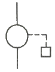
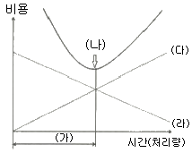
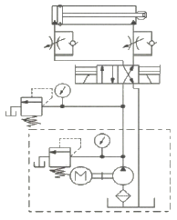

설비보전기사(구) (2017-05-07 기출문제)
1과목: 설비 진단 및 계측
1. 다음 중 인간의 청감에 대한 보정을 실시하여 소리의 크기 레벨에 근사한 값으로 측정할 수 있도록 한 측정기는?
- 녹음기
- 소음계
- 기록계
- 주파수 분석기
(정답률: 87%)

2. 다음 중 음압의 단위로 적합한 것은?
- N
- kgf
- m/s2
- N/m2
(정답률: 80%)
3. 소음 주파수를 f, 파의 전달 속도를 c로 정의할 때, 파장 λ를 규정한 식은?
- λ=f·c
- λ=c/f
- λ=f
- λ=f/c
(정답률: 69%)
4. 다음 판정 기준 중 동일 부위를 정기적으로 측정한 값을 시계열로 비교하여 정상인 경우의 값을 초기 값으로 하여 그 값의 몇 배로 되었는가를 보고 판정하는 방법은?
- 절대 판정 기준
- 상용 판정 기준
- 상대 판정 기준
- 상오 판정 기준
(정답률: 73%)
5. 다음 음파의 종류 중 음원으로부터 거리가 멀어질수록 더욱 넓은 면적으로 퍼져나가는 것은?
- 평면파
- 발산파
- 구면파
- 진행파
(정답률: 80%)
6. 다음 중 변위센서로 가장 많이 활용되는 센서는?
- 압전형
- 서보형
- 동전형
- 와전류형
(정답률: 67%)
7. 진동 현상을 설명하는데 있어서 진폭 표시의 파라미터로 적합하지 않는 것은?
- 변위
- 속도
- 위상
- 가속도
(정답률: 75%)
8. 진동전달 경로차단에서 사용되는 일반적인 방법에 대한 설명 중 옳은 것은?
- 스프링형 진동 차단기는 강성이 충분히 높아야 한다.
- 스프링형 진동 차단기에 사용한느 스프링은 고유 진동수가 가능한 높아야 한다.
- 2단계 진동제어는 저주파 진동제어에 역효과를 줄 수 있다.
- 진동체에 질량을 가하여 고유 진동수를 높이면 효과적이다.
(정답률: 65%)
9. 계측계에서 입력신호인 측정량이 시간적으로 변동할 때, 출력신호인 계측기 지시 특성을 나타내는 것은?
- 부특성
- 정특성
- 동특성
- 변환특성
(정답률: 77%)
10. 유체의 흐름에 따라 회전자로 케이스 사이의 공극에 유체를 연속적으로 취입해서 송출하는 동작을 반복하여 회전자의 운동 횟수로 유량을 구하는 유량계는?
- 노즐 유량계
- 전자 유량계
- 용적식 유량계
- 초음파식 유량계
(정답률: 80%)
11. 다음 중 진동법을 응용한 진단기술이 아닌 것은?
- 회전기계에서 생기는 각종 이상의 검출 및 평가 기술
- 유체에 의한 밸브나 배관의 과도현상
- 윤활유의 열화 판단 및 분석 기술
- 블로우·팬 등의 밸런싱 진단 및 조정 기술
(정답률: 79%)
12. 음의 발생에 대한 설명으로 틀린 것은?
- 음의 발생은 크게 고체음과 기체음 두 가지로 분류할 수 있다.
- 선풍기 또는 송풍기 등에서 발생하는 음은 난류음이다.
- 기계 본체의 진동에 의한 소리는 이차고체음이다.
- 기류음은 물체의 진동에 의한 기계적 원인으로 발생한다.
(정답률: 68%)
13. 다음 중 압전형 가속도계의 특징으로 옳은 것은?
- 외부전원이 필요하며 주파수범위가 좁다.
- 감도가 높고 저주파수 진동측정에 적합하다.
- 동전형 가속도계에 비하여 대형이며 중량이 크다.
- 고주파수의 진동이나 큰 가속도의 측정에 적합하다.
(정답률: 61%)
14. 회전기계에서 발생하는 이상 현상 중 주로 저주파 영역에서 발생하는 결함이 아닌 것은?
- 풀림
- 공동현상
- 언밸런스
- 미스얼라이먼트
(정답률: 69%)
15. 다음 중 차압기구인 오리피스에서 차압을 뽑아 내는 방식이 아닌 것은?
- 코너 탭(corner tap)
- 플랜지 탭(flange tap)
- 축류 탭(venna tap)
- 벤튜리 탭(venturi tap)
(정답률: 63%)
16. 미스얼라이먼트(misalignment)에 관한 설명으로 틀린 것은?
- 진동 파형이 항상 비 주기성을 갖으며 낮은 축진동이 발생한다.
- 보통 회전주파수의 2f(3f)의 특성으로 나타난다.
- 축 방향에 센서를 설치하여 측정되므로 축진동의 위상각은 180°가 된다.
- 커플링 등으로 연결된 축의 회전 중심선이 어긋난 상태로서 일반적으로는 정비 후에 발생하는 경우가 많다.
(정답률: 53%)
17. 다음 중 진동 측정시 주의사항으로 틀린 것은?
- 항상 같은 회전수 일 때 측정할 것
- 항상 같은 부하일 때 측정할 것
- 항상 센서는 동일 포인트에 부착할 것
- 항상 윤활조건을 다르게 하여 측정할 것
(정답률: 85%)
18. 흡음과 차음에 관한 설명 중 틀린 것은?
- 일반적으로 부드럽고 다공성표면을 갖는 재료는 높은 흡음율을 갖는다.
- 차음벽의 차음 효과는 투과율에 의해 결정된다.
- 차음벽 안쪽을 흡음재료로 처리하면 차음효과를 높일 수 있다.
- 흡음재료가 동일할 경우 일정한 흡음율을 가진다.
(정답률: 73%)
19. 설비의 신뢰성을 평가하는 척도로 옳지 않은 것은?
- 고장률
- 고장 형태
- 평균 고장 간격
- 평균 고장 시간
(정답률: 80%)
20. 소음방지 방법으로 적절하지 않은 것은?
- 흡음
- 차음
- 진동 전이
- 진동 댐핑
(정답률: 79%)
2과목: 설비관리
21. 설비관리의 영역에 포함되지 않는 것은?
- 생산보전활동
- 제품품질개선
- 보전도 향상
- 설비자산관리
(정답률: 67%)
22. 설비 프로젝트의 투자 항목에 의한 분류 중 전략적 투자가 아닌 것은?
- 후생 투자
- 연구적 투자
- 합리적 투자
- 방위적 투자
(정답률: 50%)
23. 다음 중 기계공업에서의 신제품 개발 순서로 가장 적합한 것은?
- 개발계획 → 기업화계획 → 품질화 → 생산
- 개발계획 → 기업화계획 → 생산 → 품질화
- 기업화계획 → 개발계획 → 품질화 → 생산
- 기업화계획 → 개발계획 → 생산 → 품질화
(정답률: 55%)
24. 다음 중 어느 기간 내의 평균 부하와 최대 부하의 비를 말하며 백분율로 표시한 것은?
- 부하율
- 수요율
- 부등율
- 설비 이용률
(정답률: 68%)
25. 설비투자 및 대체의 경제성 평가를 할 때 대안 사이에 있어서 조업비용이나 자본비용 면에서 계산하여 판정하는 원가비교법에 해당되지 않는 것은?
- 연간비용법
- 현가비교법
- 제조원가비교법
- 자본회수 기간법
(정답률: 62%)
26. 욕조곡선(bath tub curve)에서 우발 고장기에 발생하는 고장의 원인으로 틀린 것은?
- 설비의 혹사
- 제조과정의 실수
- 안전 계수의 미확보
- 예측보다 낮은 설비강도
(정답률: 64%)
27. 설비의 배치형태에서 제품의 종류가 많고 수량이 적으며 주문생산과 표준화가 곤란한 다품종 소량생산에 가장 적합한 것은?
- 기능별 배치
- 제품별 배치
- 혼합형 배치
- 제품 고정형 배치
(정답률: 72%)
28. 로스 계산방법에 대한 내용으로 틀린 것은?
- 시간가동률 = 가동시간 / 부하시간
- 성능가동률 = 실질가동률 / 속도가동률
- 시간가동률 = 부하시간-정지시간 / 부하시간
- 성능가동률 = 속도가동률×실질가동률
(정답률: 50%)
29. 배관교체, 기타 변경공사 등 조업 상의 요구에 의해서 실시하는 공사는?
- 개수공사
- 예방수리공사
- 보전개량공사
- 일반보수공사
(정답률: 65%)
30. 설비 성능 열화의 원인과 열화의 내용이 바르지 못한 것은?
- 자연 열화 – 방치에 의한 녹 발생
- 노후 열화 – 방치에 의한 절연 저하 등 재질 노후화
- 재해 열화 – 폭풍, 침수, 폭발에 의한 파괴 및 노후화 촉진
- 사용 열화 – 취급, 반자동 등의 운전 조건 및 오조작에 의한 열화
(정답률: 64%)
31. 다음 중 자주보전의 7단계의 순서로 맞는 것은?
- 초기청소 → 발생원인 곤란개소 대책 → 자주점검 → 점검·급유기준 작성 → 자주보전의 시스템화 → 총 점검 → 자주관리의 철저
- 초기청소 → 점검·급유기준 작성 → 발생원인 곤란개소 대책 → 자주점검 → 자주보전의 시스템화 → 총 점검 → 자주관리의 철저
- 초기청소 → 점검·급유기준 작성 → 발생원인 곤란개소 대책 → 총 점검 → 자주보전의 시스템화 → 자주점검 → 자주관리의 철저
- 초기청소 → 발생원인 곤란개소 대책 → 점검·급유기준 작성 → 총 점검 → 자주점검 → 자주보전의 시스템화 → 자주관리의 철저
(정답률: 72%)
32. 다음은 계측관리 공정명세표 기호이다. 기호의 설명으로 맞는 것은?

- 작업 후의 계측
- 작업 전의 계측
- 작업 중의 계측
- 작업 전후 계측
(정답률: 76%)
33. 다음 그림은 최적수리주기 도표이다. 괄호에 들어 가야할 내용이 맞게 연결한 것은?

- (가)-최소비용점 (나)-최적수리주기 (다)-단위시간당 열화손실비 (라)-단위시간당 보전비
- (가)-최적수리주기 (나)-최소비용점 (다)-단위시간당 열화손실비 (라)-단위시간당 보전비
- (가)-최소비용점 (나)-최적수리주기 (다)-단위시간당 보전비 (라)-단위시간당 열화손실비
- (가)-최적수리주기 (나)-최소비용점 (다)-단위시간당 보전비 (라)-단위시간당 열화손실비
(정답률: 54%)
34. 라인별 배치라고도 하며 공정의 계열에 따라 각 공정에 필요한 기계가 배치되는 설비배치 형태는?
- 제품별 배치
- 혼합형 배치
- 공정별 배치
- 제품고정 배치
(정답률: 59%)
35. 다음 중 품질보전의 전개순서를 가장 바르게 나열한 것은?
- 현상분석 → 목표설정 → 요인해석 → 검토 및 실시 → 표준화
- 목표설정 → 현상분석 → 요인해석 → 표준화 → 검토 및 실시
- 현상분석 → 요인해석 → 목표설정 → 표준화 → 검토 및 실시
- 목표설정 → 현상분석 → 요인해석 → 검토 및 실시 → 표준화
(정답률: 51%)
36. 계측작업 및 방법의 관리와 합리화를 위한 방법과 가장 거리가 먼 것은?
- 안전관리의 향상
- 계측 작업의 표준화
- 계측 정밀도의 유지 향상
- 계측기의 사용, 취급법의 적정화
(정답률: 75%)
37. 예방보전 검사제도의 흐름을 나타낸 것으로 가장 적합한 것은?
- PM검사 표준 설정 → PM검사 계획 → PM검사 실시 → 수리 요구 → 수리 검수 → 설비 보전 기록
- PM검사 계획 → PM검사 표준 설정 → PM검사 실시 → 수리 요구 → 수리 검수 → 설비 보전 기록
- 수리 요구 → PM검사 계획 → PM검사 표준 설정 → PM검사 실시 → 수리 검수 → 설비 보전 기록
- 수리 요구 → 수리 검수 → PM검사 계획 → PM검사 표준 설정 → PM검사 실시 → 설비 보전 기록
(정답률: 59%)
38. 만성로스에 관한 설명 중 가장 거리가 먼 것은?
- 만성로스는 잠재하므로 표면화하기 어려운 경향이 있다.
- 만성로스 개선을 위해서는 특징을 충분히 파악하는 것이 중요하다.
- 만성로스는 원인과 결과의 관계가 불명확하고 복합적 원인인 경우가 많다.
- 만성로스를 제로(zero)화 하기 위해서는 관리도 분석기법의 활용이 가장 바람직히다.
(정답률: 69%)
39. 치공구 관리의 기능 중 보전 단계에서 행해지는 것으로 가장 적합한 것은?
- 공구의 연구시험
- 공구의 제작 및 수리
- 공구의 설계 및 표준화
- 공구 소요량의 계획, 보충
(정답률: 60%)
40. 공장 설비관리의 종류 중 부대시설에 해당되지 않는 것은?
- 급수설비
- 배수설비
- 소방설비
- 조명설비
(정답률: 72%)
3과목: 기계일반 및 기계보전
41. 축(shaft)고장의 직접 원인 중 설계 불량과 가장 거리가 먼 것은?
- 재질 불량
- 급유 불량
- 형상 구조 불량
- 치수 강도 부족
(정답률: 79%)
42. 재료의 강도와 경도를 증가시키기 위하여 실시하는 열처리로 가장 적합한 것은?
- 풀림
- 불림
- 뜨임
- 담금질
(정답률: 71%)
43. 베어링의 안지름 기호가 08일 때 이 베어링의 안지름은?
- 8 mm
- 16 mm
- 32 mm
- 40 mm
(정답률: 67%)
44. 공기 중에는 액체 상태를 유지하고 공기가 차단되면 중합이 촉진되어 경화, 접착되는 것으로 진동이 있는 차량, 항공기, 동력기 등의 체결용 요소 풀림과 누설 방지를 위해 사용되는 접착제는?
- 액상 개스킷
- 혐기성 접착제
- 열 용융형 접착제
- 금속구조용 접착제
(정답률: 73%)
45. 큰 구멍의 다듬질에 사용되며 날과 자루가 별도로 되어 있어 조립하여 사용하는 리머로 맞는 것은?
- 팽창 리머
- 셀 리머
- 브리지 리머
- 조정 리머
(정답률: 68%)
46. 스패너에 의한 적정한 죔 방법 중 M 12~14까지의 볼트를 죌 때 스패너 손잡이 부분의 끝을 꽉 잡고 힘을 충분히 주어야 하는데, 이때 가해지는 적당한 힘은 얼마인가?
- 약 5 kgf
- 약 20 kgf
- 약 50 kgf
- 100 kgf 이상
(정답률: 74%)
47. 교류 및 직류 아크용접기의 특성을 비교한 내용으로 틀린 것은?
- 교류 아크용접기가 직류 아크용접기 보다 감전위험성이 높다.
- 교류 아크용접기는 자기쏠림을 방지할 수 있다.
- 무부하 전압은 직류 아크용접기에 비하여 교류 아크용접기가 높다.
- 아크의 안정성은 교류용접기가 직류용접기 보다 우수하다.
(정답률: 64%)
48. 공기의 유량과 압력을 이용한 장치 중 송풍기의 사용 압력을 올바르게 나타낸 것은?
- 0.1 kgf/cm2 이하
- 0.1~1 kgf/cm2
- 1~10 kgf/cm2
- 10 kgf/cm2 이상
(정답률: 71%)
49. 다음 중 원심식과 비교한 왕복식 압축기의 장점은?
- 대용량이다.
- 윤활이 쉽다.
- 압력맥동이 없다.
- 고압 발생이 가능하다.
(정답률: 73%)
50. 인체 손상, 물적 손상 또는 받아들일수 없는 결과를 초래할 것으로 평가되는 결함을 무엇이라 하는가?
- 중 결함
- 치명 결함
- 완전 결함
- 불확정 결함
(정답률: 77%)
51. 관내 압력이 포화증기압 이하로 되어 소음과 진동이 생기고 양수불능의 원인이 되는 현상은?
- 서징
- 크래킹
- 수격작용
- 캐비테이션
(정답률: 72%)
52. 스프링 재료가 갖추어야 할 구비조건으로 적합하지 않은 것은?
- 열처리가 쉬워야 한다.
- 영구변형이 없어야 한다.
- 피로강도가 낮아야 한다.
- 가공하기 쉬운 재료이어야 한다.
(정답률: 82%)
53. 축 정열시 커플링 면간을 측정하는 게이지로 맞는 것은?
- 틈새게이지
- 피치게이지
- 링게이지
- 하이트게이지
(정답률: 74%)
54. 공작기계가 구비해야할 조건으로 틀린 것은?
- 고장이 적을 것
- 기계효율이 좋을 것
- 높은 정밀도를 가질 것
- 사용이 간편하고 내구력이 적을 것
(정답률: 83%)
55. 다음 중 역류방지 밸브가 아닌 것은?
- 체크밸브(Check Valve)
- 플랩밸브(Flap Valve)
- 반전밸브(Reflex Valve)
- 코크밸브(Cock Valve)
(정답률: 63%)
56. 기어 감속기의 유지관리를 위한 요점 사항이 아닌 것은?
- 이상의 조기 발견
- 정확한 윤활의 유지
- 치면의 마모 상태 파악
- 소음이 발생하면 분해하여 기어를 교환
(정답률: 80%)
57. 펌프 흡입관에 대한 설명으로 틀린 것은?
- 흡입관 끝에 스트레이너를 설치한다.
- 관의 길이는 짧고 곡관의 수는 적게 한다.
- 배관은 펌프를 향해 1/150 올림 구배를 한다.
- 흡입관에서 편류나 와류가 발생하지 못하게 한다.
(정답률: 76%)
58. 보전용 재료 중 방청 윤활유의 종류와 기호가 잘못 연결된 것은?
- 1종(1호) : KP-7
- 1종(2호) : KP-8
- 1종(3호) : KP-9
- 1종(4호) : KP-10
(정답률: 80%)
59. 스퍼 기어의 제도에서 요목표에 없어도 되는 항목은?
- 기어의 치형
- 기어의 모듈
- 기어의 재질
- 기어의 압력각
(정답률: 67%)
60. 기어 손상에서 이 부분이 파손되는 주원인이 아닌 것은?
- 마모
- 균열
- 피로 파손
- 과부하 절손
(정답률: 62%)
4과목: 윤활관리
61. 베어링에 그리스를 충전하는 휴대용 그리스 펌프로 1회의 공급으로 수 일 또는 수 주간의 주기를 가진 경우 사용하는 것은?
- 그리스 컵
- 그리스 건
- 오일 미스트
- 집중구리스 윤활장치
(정답률: 75%)
62. 그리스의 시험방법에서 그리스를 장기간 보존시 기유와 증주제의 분리정도를 알기 위한 것은?
- 적점 측정
- 누설도 측정
- 이유도 측정
- 산화안정도측정
(정답률: 77%)
63. 작동유의 수명을 결정하는 성상으로 오일의 산화로 생성된 슬러지가 밸브나 오리피스관 등을 막히게 하거나 마찰 부위를 마모시키는 원인이 되는 것은?
- 전단안정성
- 산화안정성
- 마모방지성
- 청정분산성
(정답률: 68%)
64. 설비의 우발 고장기간 중 고장감소를 위한 보전방법으로 옳지 않은 것은?
- 오염 관리
- 윤활제 관리
- 운전보전 관리
- 윤활설비 사후보전
(정답률: 69%)
65. 윤활유 급유법 중 기계의 운동부가 기름 탱크내의 유면에 미소하게 접촉하면 기름의 미립자 또는 분무상태로 기름 단지에서 떨어져 마찰면에 튀겨 급유하는 것은?
- 패드급유법
- 비말급유법
- 그리스급유법
- 사이펀급유법
(정답률: 78%)
66. 다음 중 윤활유의 점도를 나타낸 설명 중 틀린 것은?
- 점도란 윤활유가 유동할 때 나타나는 공기의 저항을 말한다.
- 윤활유의 물리 화학적 성질 중 가장 기본이 되는 성질이다.
- 절대점도 = 동점도 × 밀도로 계산한다.
- 점도의 단위는 poise 나 N·s/m2 이 사용된다.
(정답률: 64%)
67. 다음 중 비순환 급유방법이 아닌 것은?
- 손 급유법
- 적하 급유법
- 바늘 급유법
- 유욕 급유법
(정답률: 69%)
68. 다음 중 윤활관리의 기본적인 효과가 아닌 것은?
- 윤활비의 절약
- 윤활사고의 방지
- 보수 유지비의 절감
- 기계 정도와 기능의 저하
(정답률: 80%)
69. 윤활의 4원칙에 포함되지 않는 것은?
- 적유
- 적기
- 적법
- 적당
(정답률: 74%)
70. 윤활유의 열화 방지방법으로 틀린 것은?
- 오일의 적정 점도유지를 위한 적당한 첨가제 사용을 권장한다.
- 사용유는 원심분리기 백토 처리 등의 재생법을 이용하여 재상용한다.
- 새로운 기계 도입시 쇠, 녹물, 방청제 등을 충분히 세척 후 사용한다.
- 월 1회 정도 세척을 실시하여 순환계통을 청정하게 유지하고 교환 시는 열화유를 50% 정도 제거한다.
(정답률: 69%)
71. 윤활유 분석을 위한 시료 채취 시 주의 사항으로 틀린 것은?
- 시료는 가동중인 설비에서 채취한다.
- 탱크 바닥에서 채취한다.
- 채취 개소는 일정한 장소나 지점에서 채취한다.
- 샘플링 Line 이나 밸브, 채취 기구는 샘플링 전에 충분히 Flushing을 한다.
(정답률: 73%)
72. 미끄럼 베어링에 그리스 윤활을 사용할 때 고려해야할 사항으로 틀린 것은?
- 운전 온도에 적정한 점도의 윤활유를 기유로 하여 안정된 중주체를 사용한 그리스를 선택한다.
- 중하중의 경우에는 극압제를 첨가한 그리스를 사용한다.
- 급유방법에는 급유하기 편리한 주도의 그리스를 선택한다.
- 진동 하중을 받을 때에는 굳은 그리스를 사용하지 않는다.
(정답률: 58%)
73. 기계설비의 운전시 사고발생의 원인으로 윤활부위, 윤활조건, 윤활환경 등에 따라 분류할 수 있다. 이 중 윤활 환경적 요인으로 가장 거리가 먼 것은?
- 오일의 열화와 오타
- 전도열이 높은 경우
- 기온에 의한 현저한 온도변화
- 마찰면의 방열이 불충분한 경우
(정답률: 59%)
74. 일반적인 윤활유의 기능이 아닌 것은?
- 밀봉작용
- 방청작용
- 절삭작용
- 마모방지작용
(정답률: 80%)
75. 다음 중 기어 윤활에 관한 설명으로 틀린 것은?
- 고소기어에는 저점도의 윤활유가 적합하다.
- 웜 기어는 미끄럼 속도가 빠르고 운전 온도도 높게 되므로 산화 안정성이 우수한 순광유가 일반적으로 사용된다.
- 기어는 높은 하중을 받아 미끄러질 때 마찰면 마모를 방지하기 위하여 내하중성이 있는 극압유가 요구된다.
- 하이포이드 기어는 일반적으로 중하중을 받으므로 불활성 극압 윤활유가 적당하다.
(정답률: 60%)
76. 윤활유의 점도에 해당하는 것으로 그리스의 굳은 정도를 나타내는 것은?
- 비중
- 주도
- 유동점
- 점도지수
(정답률: 69%)
77. 공기 압축기에서 윤활에 큰 영향을 미치는 요소로 맞는 것은?
- 첨가제
- 열과 물
- 압력과 용량
- 유동점과 인화점
(정답률: 74%)
78. 다음 중 석유 제품의 산성 또는 알칼리성을 나타내는 것은?
- 비중
- 중화가
- 유동점
- 산화안정성
(정답률: 69%)
79. 중앙집중식 그리스 공급장치에서 그리스를 확실히 공급하기 위해서는 여러 가지 조건을 만족해야 한다. 다음 중 그리스를 확실히 공급하기 위해 만족시켜야 할 조건으로 가장 거리가 먼 것은?
- 작동의 보증
- 배관계의 복잡 다단화
- 확실한 정량분배의 급유
- 보다 긴 배관계의 많은 급유개소
(정답률: 69%)
80. 설비보전 조직 내 윤활기술자의 업무에 대한 설명으로 틀린 것은?
- 보유설비의 윤활관계 개선개조
- 윤활제의 성분 분석 및 조성
- 윤활의 실태조사 및 소비량 관리
- 윤활제의 선정 및 취급법의 표준화
(정답률: 58%)
5과목: 공유압 및 자동화
81. 다음 중 일반적인 단동실린더의 속도제어에 적합한 방법은?
- 재생제어
- 미터 인 제어
- 미터 아웃 제어
- 블리드 오프 제어
(정답률: 58%)
82. 다음의 속도제어 회로에서 압력 릴리프 밸브에 설정한 시스템의 최대 압력을 초과하는 압력이 만들어질 가능성이 있는 방법은?

- 미터 인 회로
- 미터 아웃 회로
- 블리드 오프 회로
- 카운터 밸런스 회로
(정답률: 54%)
83. 공기압의 특징으로 틀린 것은?
- 제어가 간단하다.
- 에너지의 축적이 용이하다.
- 액추에이터의 동작속도가 빠르다.
- 비압축성에너지로 위치제어성이 좋다.
(정답률: 73%)
84. 유압의 압력 릴리프 밸브로 사용할 수 없는 기능은?
- 감압 기능
- 시퀀스 기능
- 카운터 밸런스 기능
- 유압 시스템의 최대 압력 설정 기능
(정답률: 49%)
85. 베인 펌프의 일반적인 특징으로 틀린 것은?
- 소음이 작다.
- 토출 측의 맥동현상이 적다.
- 압력이 떨어질 염려가 없다.
- 출력에 비해 형상 치수가 크다.
(정답률: 58%)
86. 스테핑 모터(stepping motor)의 일반적인 특징으로 옳은 것은?
- 회전각도의 오차가 적다.
- 관성이 큰 부하에 적합하다.
- 진동 및 공진의 문제가 없다.
- 대용량의 기기를 만들 수 있다.
(정답률: 50%)
87. 예방보전의 효과로 틀린 것은?
- 예비품 재고량의 감소
- 보상비나 보험료가 증가
- 작업에 대한 계몽교육, 관리수준의 향상
- 비능률적인 돌발고장수리로부터 계획수리로 이행 가능
(정답률: 77%)
88. 압축기 흡입필터의 눈 막힘 발생 시 나타나는 현상으로 가장 거리가 먼 것은?
- 용적효율이 저하된다.
- 윤활유의 소비가 증가된다.
- 실린더와 피스톤이 마모된다.
- 토출라인의 드레인과 진동이 감소된다.
(정답률: 64%)
89. 요구되는 입력조건이 충족되면 그에 상응하는 출력신호가 나타나는 제어는?
- 논리제어
- 동기제어
- 시퀀스제어
- 시간종속 시퀀스제어
(정답률: 62%)
90. 유압 실린더의 속도조절방식 중 외부에 유량조절밸브를 사용하지 않고 유압실린더 속도를 빠르게 하여 작업시간을 단축하는 회로는?
- 차동 회로
- 미터 인 회로
- 미터 아웃 회로
- 블리드 오프 회로
(정답률: 47%)
91. 일반적인 유압 발생장치에서 기름 탱크의 용량을 결정하는 기준은?
- 펌프 토출량의 3배 이상
- 펌프의 투출량의 같은 크기
- 스트레이너 유량의 3배 이상
- 공기 청정기 통기용량의 2배 이상
(정답률: 73%)
92. 서보제어의 의미로 옳은 것은?
- 증폭제어
- 느린 정밀제어
- 오픈(open)회로 제어
- 빠르고 정확한 폐회로제어
(정답률: 67%)
93. 전선의 굵기를 결정하는 3요소가 옳게 짝지어진 것은?
- 전산 허용저항, 전압강하, 기계적 강도
- 전선 허용전류, 전압강하, 기계적 강도
- 전선 허용전압, 전압강하, 기계적 강도
- 전선내의 발열량, 전압강하, 기계적 강도
(정답률: 67%)
94. 실린더의 속도를 증가시키는데 사용할 수 있는 밸브는?
- 2압 밸브
- 급속배기 밸브
- 교축릴리프 밸브
- 압력 시퀀스 밸브
(정답률: 75%)
95. 공기의 상태 변화에서 압력이 일정할 때 체적과 온도와의 관계를 설명한 법칙은?
- 보일의 법칙
- 샤를의 법칙
- 연속의 법칙
- 보일사를의 법칙
(정답률: 54%)
96. 공·유압 장치의 특징으로 옳은 것은?
- 공압장치는 균일한 속도를 얻기 쉽다.
- 공압장치는 폭발과 인화의 위험이 있다.
- 유압장치는 진동이 많고 응답성이 나쁘다.
- 유압장치는 소형장치로 큰 출력을 얻을 수 있다.
(정답률: 70%)
97. 제어시스템은 에너지 요소, 신호 입력 요소, 신호 처리 요소, 신호 출력 요소로 구성되는 신호 전달 체계를 갖는다. 전기 회로 구성 요소 중에서 푸시버튼 스위치는 신호 전달 체계에서 어느 부분에 해당되는가?
- 에너지 요소
- 신호 입력 요소
- 신호 처리 요소
- 신호 출력 요소
(정답률: 78%)
98. 다음 중 충격 실린더의 사용 목적으로 가장 적합한 것은?
- 균일한 속도를 얻기 위해
- 순간적인 큰 힘을 얻기 위해
- 스틱슬립 현상을 방지하기 위해
- 충격을 흡수하여 기기를 보호하기 위해
(정답률: 60%)
99. 공장의 모든 보전요원을 한 사람의 관리자 밑에서 조직하여 제조부분과의 교류나 연결성은 적어지지만 독자적으로 중점적인 인원배치나 보전기술 향상책을 취하고 관리를 하기 쉬운 보전 조직은?
- 부분보전
- 지역보전
- 절충보전
- 집중보전
(정답률: 74%)
100. 위치 데이터를 서보 오프 상태에서 수동 조작하여 위치를 확인한 후 입력하는 제어방식은?
- 직선보간
- 원호보간
- 티칭 플레이 백
- 포인트 투 포인트
(정답률: 66%)